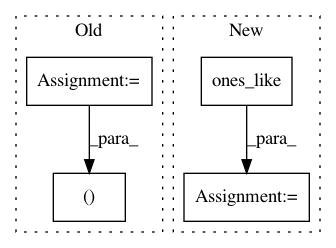

6bf3f51cd0a312da842157665663c2dad9983248,tensorflow_ranking/python/losses_impl.py,ClickEMLoss,_compute_latent_prob,#ClickEMLoss#Any#Any#Any#,914
Before Change
rel_prob = tf.math.sigmoid(tf.cast(rel_logits, tf.float32))
is_clicked = tf.greater_equal(tf.cast(clicks, tf.float32), 1.0)
prob_non_clicks = 1 - exam_prob * rel_prob + 1e-6
exam_prob_given_non_clicks = exam_prob * (1 - rel_prob) / prob_non_clicks
rel_prob_given_non_clicks = (1 - exam_prob) * rel_prob / prob_non_clicks
exam_prob_given_non_clicks, rel_prob_given_non_clicks = [
tf.stop_gradient(
tf.compat.v1.where(is_clicked, tf.ones_like(prob), prob))
for prob in [exam_prob_given_non_clicks, rel_prob_given_non_clicks]
After Change
exam_prob_posterior = tf.compat.v1.where(
is_clicked, tf.ones_like(exam_logits_posterior),
tf.sigmoid(exam_logits_posterior))
rel_prob_posterior = tf.compat.v1.where(
is_clicked, tf.ones_like(rel_logits_posterior),
tf.sigmoid(rel_logits_posterior))
return tf.stop_gradient(exam_prob_posterior), tf.stop_gradient(
rel_prob_posterior)
def compute_unreduced_loss(self, labels, logits):
In pattern: SUPERPATTERN
Frequency: 3
Non-data size: 4
Instances
Project Name: tensorflow/ranking
Commit Name: 6bf3f51cd0a312da842157665663c2dad9983248
Time: 2021-01-29
Author: xuanhui@google.com
File Name: tensorflow_ranking/python/losses_impl.py
Class Name: ClickEMLoss
Method Name: _compute_latent_prob
Project Name: dmlc/gluon-nlp
Commit Name: 1f9ad444b5dee8b2562b7bfa1cf9f576fa32a347
Time: 2020-07-31
Author: 37728728+ZheyuYe@users.noreply.github.com
File Name: src/gluonnlp/models/electra.py
Class Name: ElectraForPretrain
Method Name: get_corrupted_tokens
Project Name: asyml/texar
Commit Name: c8523b2dc735a1b82ca6170e6ca349defe9f77fc
Time: 2017-11-17
Author: shore@pku.edu.cn
File Name: examples/transformer.py
Class Name:
Method Name: